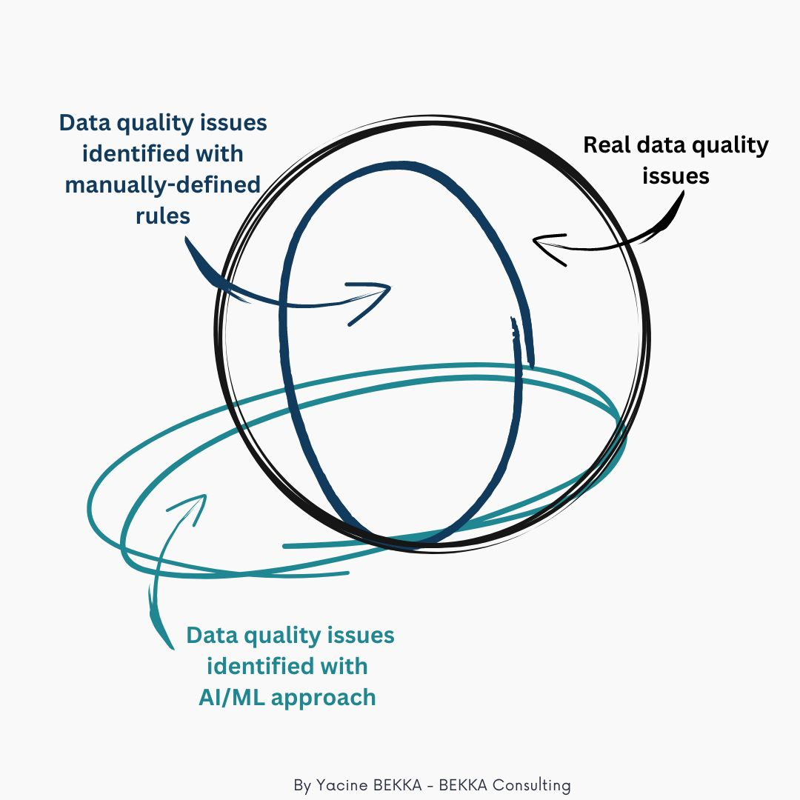

Repost Linkedin : https://www.linkedin.com/posts/yacine-bekka_dataquality-ai-chatgpt-activity-7023560922568777728-2HoB?utm_source=share&utm_medium=member_desktop
Are you thinking about using AI for monitoring your hashtag#dataquality ? Let me share with you why it might not be the best approach
🧠 AI-based control
- Question answered : Is this record likely to be anomaly, based on all other existing records ?
- Pros : Doesn’t require business SME/data producer involvement
- Cons : Trickier to interpret (false positive/false negative), blind to rules not inferable from the dataset, depend on the quality of data itself
📜 Manually-defined rules based control
- Question answered : Does this record comply with the predefined rule for sure ?
- Pros : Easily interpretable, what you see is what you get
- Cons : Rules have to be defined manually, usually by business SME/data producer
I would usually not recommend using only AI-based control (even if you work with big data), as you would miss a lot of data quality issues and have some records flagged as issues that are perfectly accurate.
Keep in mind also that you either develop the hashtag#AI internally (which is usually costly) or have to rely on a vendor’s solution which would be a black box (if the solution is working fine, no problem but if it’s not…).
It can be a great tool to either complement manually defined rules or to avoid the “blank page syndrome” with business SMEs by having a set of rules to start the discussion (though other solutions exist for that purpose) but it doesn’t replace the “old-school” way of doing things !
A final thought, with the recent improvement in natural language models (hashtag#chatgpt), you can imagine a data quality rules inference model that would take as an input not only the data but also the documentation around this data (business process documentation, user guide for IT tools, etc).
This kind of solution would come with its own set of problems (confidentiality of documents, internal dev vs vendor solution, etc) but one can dream about what might be the future of data quality management…. Humm, what was the definition of this indicator again? 😉
